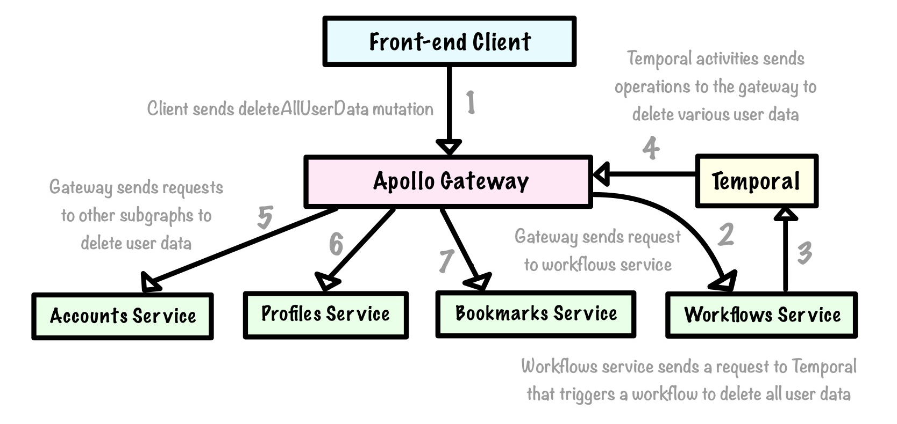
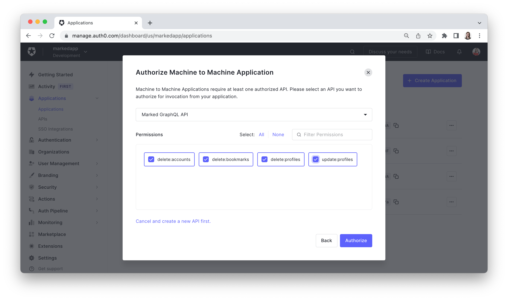

Chapter 8: Multi-Subgraph Workflows with Temporal
In this chapter, we will:
- Explore patterns for coordinating related data operations across distributed services
- Create a subgraph schema for a workflows service and compose it into the supergraph
- Create a new custom type system directive to support machine-to-machine application authorization
- Configure multi-subgraph workflows using Temporal as an orchestrator
The Challenge of Cascading User Data Deletion Across Services
As a requirement for the Marked application, when a user decides to delete their account then all of their data will be removed from Auth0, MongoDB, and any other backing data sources that may be added in the future. Because Marked is now powered by three different subgraph services, we are faced with the challenge of how to cascade a user’s action when deleting their account to deleting their profile and bookmark data as well.
Without this cascade, we could end up with numerous orphaned profile and bookmark documents in their respective databases. Furthermore, from a transparency perspective, a user would typically expect that if they are deleting their account then they can also remove all of their personal information and content at the same time.
At the moment, there are deleteAccount, deleteProfile, and deleteBookmark fields exposed in the API schema that would allow client developers to coordinate this business logic on their side, but this wouldn’t be a very GraphQL-like solution to this problem because we typically want to design a schema so that clients can avoid handling precisely this kind of complexity. And in general, it shouldn’t be left up to a client application to know what data needs to be cleaned up to prevent orphaned records in a database.
Because we split our server-side application into three self-contained subgraph services at the outset, querying MongoDB directly in the deleteAccount method in the AccountsDataSource would be an ugly band-aid and violate separation of concerns. The accounts service would then exert control over data that belongs to the profiles and bookmarks services, and do so in a way that is opaque to those services.
What we have finally run into is a common problem within distributed systems where one service needs to know about something that happened in another service, but without introducing hard dependencies between those services. There is nothing built into Apollo Federation that will automatically facilitate a series of mutations apart from the typical serial execution that would happen for top-level Mutation fields in any spec-compliant GraphQL server1. But again, this would require clients to understand what series of mutations would need to be executed to delete all of the user data and there would be no special error-handling or retry logic automatically available in this approach if something goes wrong during the resolution of one of those fields.
Before we explore potential solutions, let’s visualize the work that needs to be done when a user deletes their account data:
The diagram above may appear simple, but the matter of how to best coordinate interrelated operations on data across distributed systems is not a straightforward one. For Marked specifically, we need to think about what happens if one services fails to execute an operation as expected during the user data deletion process. We won’t need to worry about full-blown distributed transactions—where a failure in one subgraph service should trigger a rollback of related operations that were successfully completed in other subgraphs through a compensating transaction. However, we should have some retry logic available so that if a subgraph fails to delete some of the user’s data for any reason, then the operation can be run again later.
In microservice architectures, sagas are a common pattern for coordinating a series of related, local transactions across distributed services2. In the first edition of this book, Redis was used as a pub/sub system where subgraph services could subscribe to different queues and run operations based on the messages that they received (for example, deleting a profile in response to an event that indicated that a particular user account had been deleted). This approach was closest to saga choreography, where individual services take self-directed actions based on events that are emitted from other services.
In this revised edition, we’ll take a different approach and use something closer to saga orchestration where a central service will direct the subgraph services to run certain operations in response to some user action. Specifically, we’ll use Temporal as an orchestrator for the Marked application, and perhaps most interestingly, we will implement Temporal within the context of a new subgraph that will exist solely to coordinate multi-subgraph workflows such as cascading deletion.
Before we start writing any code for this new subgraph, let’s paint a high-level picture of how all of the pieces will fit together by the end of this chapter:

As we can see, we will add a deleteAllUserData mutation to the API schema via the workflows subgraph and initiate a Temporal workflow from within that field’s resolver. The Temporal workflow will contain a series of ordered activities and use a GraphQL client to make calls back to the gateway that will trigger mutations in the three other subgraphs that remove all applicable user data. Once these operations have completed, the workflows subgraph will return a response from the resolver for the deleteAllUserData mutation to the gateway and the gateway will then return its response to the front-end client that initiated the request.
Under the hood, all of the required orchestration logic is handled by the workflows subgraph so the client won’t have to worry about any back-end implementation details when cleaning up a user’s data. And because Temporal has retry logic built into it, individual subgraphs or clients won’t have to worry about implementing retries for specific phases of this workflow either if anything fails.
Install Packages and Scaffold the Workflows Service
To begin, we’ll create a fourth and final subgraph subdirectory called workflows in the root project subdirectory and then generate its package.json file:
workflows/
npm init --yes
Then we’ll install the usual dependencies for the subgraph:
workflows/
npm i @apollo/subgraph@2.0.3 apollo-datasource@3.3.1 apollo-server@3.7.0 dotenv@16.0.0 graphql@16.5.0 mongoose@6.3.0
And add nodemon as a development dependency:
workflows/
npm i -D nodemon@2.0.15
We’ll set the type key to module and also add a dev script:
workflows/package.json
{
// ...
"type": "module",
"scripts": {
"dev": "nodemon -r dotenv/config -e env,graphql,js ./src/index.js"
},
// ...
}
We’ll need to use the @owner directive in the workflows service to authorize the deleteAllUserData field, so once again, we will link the copy of graphql installed in the shared directory to avoid errors:
workflows/
npm link graphql
Next, we’ll add a .env file for this service with a few initial environment variables:
workflows/.env
GATEWAY_ENDPOINT=http://localhost:4000/
NODE_ENV=development
PORT=4004
Note that we have set the GATEWAY_ENDPOINT variable here so it can be used by a GraphQL client that we will create in this service to make calls back to the gateway in the Temporal activities later on. Next, we’ll create some familiar files for this subgraph service. We’ll create an index.js file in a src directory, followed by a graphql subdirectory in workflows/src with schema.graphql and resolvers.js files, plus a dataSources subdirectory in there with a WorkflowsDataSource.js file. The current file structure will now look like this:
workflows
├── node_modules/
| └── ...
├── src/
| └── graphql
| └── dataSources
| └── WorkflowsDataSource.js
| └── resolvers.js
| └── schema.graphql
| └── index.js
├── .env
├── package.json
├── package-lock.json
Now we can build out the workflows service’s index.js file:
workflows/src/index.js
import { dirname, resolve } from "path";
import { fileURLToPath } from "url";
import { readFileSync } from "fs";
import { ApolloServer, gql } from "apollo-server";
import { buildSubgraphSchema } from "@apollo/subgraph";
import { authDirectives } from "../../shared/src/index.js";
import resolvers from "./graphql/resolvers.js";
import WorkflowsDataSource from "./graphql/dataSources/WorkflowsDataSource.js";
const __dirname = dirname(fileURLToPath(import.meta.url));
const port = process.env.PORT;
const { authDirectivesTypeDefs, authDirectivesTransformer } = authDirectives();
const subgraphTypeDefs = readFileSync(
resolve(__dirname, "./graphql/schema.graphql"),
"utf-8"
);
const typeDefs = gql(`${subgraphTypeDefs}\n${authDirectivesTypeDefs}`);
let subgraphSchema = buildSubgraphSchema({ typeDefs, resolvers });
subgraphSchema = authDirectivesTransformer(subgraphSchema);
const server = new ApolloServer({
schema: subgraphSchema,
context: ({ req }) => {
const user = req.headers.user ? JSON.parse(req.headers.user) : null;
return { user };
},
dataSources: () => {
return {
workflowsAPI: new WorkflowsDataSource()
};
}
});
server.listen({ port }).then(({ url }) => {
console.log(`Workflows service ready at ${url}`);
});
Next, we’ll configure this subgraph schema to use Federation 2 semantics, but we won’t need to import any federation directives this time:
workflows/src/graphql/schema.graphql
extend schema @link(url: "https://specs.apollo.dev/federation/v2.0")
Then we’ll set up the resolvers.js file:
workflows/src/graphql/resolvers.js
const resolvers = {};
export default resolvers;
As well as the WorkflowsDataSource class:
workflows/src/graphql/dataSources/WorkflowsDataSource.js
import { DataSource } from "apollo-datasource";
class WorkflowsDataSource extends DataSource {
constructor() {
super();
}
}
export default WorkflowsDataSource;
Now we can go back over to gateway and add a new environment variable for the workflows service’s endpoint:
gateway/.env
# ...
ACCOUNTS_ENDPOINT=http://localhost:4001
PROFILES_ENDPOINT=http://localhost:4002
BOOKMARKS_ENDPOINT=http://localhost:4003
WORKFLOWS_ENDPOINT=http://localhost:4004
Lastly, the gateway configuration needs to be updated to introspect the new subgraph’s schema:
gateway/src/config/apollo.js
// ...
function initGateway(httpServer) {
const gateway = new ApolloGateway({
supergraphSdl: new IntrospectAndCompose({
subgraphs: [
{ name: "accounts", url: process.env.ACCOUNTS_ENDPOINT },
{ name: "profiles", url: process.env.PROFILES_ENDPOINT },
{ name: "bookmarks", url: process.env.BOOKMARKS_ENDPOINT },
{ name: "workflows", url: process.env.WORKFLOWS_ENDPOINT }
],
pollIntervalInMs: 1000
}),
// ...
});
// ...
With the basic plumbing in place for the workflows service, we can open a new terminal tab or window and run npm run dev to start it up just like the other services.
Create Another Auth0 Application to Authenticate the Workflows Service
As discussed earlier in this chapter, when the gateway executes a query plan and forwards the deleteAllUserData mutation to the workflows subgraph, that subgraph will need to coordinate a series of requests back to the gateway to run mutations that will remove all of the user’s data from Auth0 and MongoDB. As a best practice, we will not send these requests directly to the subgraphs, even though the endpoints are accessible in our development environment (recall the recommendation from Chapter 7 that subgraph endpoints should only be exposed to the gateway for security reasons).
All of the subsequent mutations that must be sent to the accounts, profiles, and bookmarks services will require authorization to ensure that bad actors can’t delete other people’s data. So now we are faced with an interesting challenge—how will requests sent from the workflows service to the gateway be authorized? When an authenticated end user takes an action to initiate the deleteAllUserData mutation their request will be accompanied by their JWT in the Authorization header, which the gateway will then decode and validate and pass to the workflows services. But simply sending the previously validated JWT back to the gateway when the follow-up mutations are triggered by Temporal activities would expose a huge security risk if we were to expect the gateway to trust the validity of that token blindly at that point.
Lucky for us, there’s a feature of Auth0 that we have already used that will help address this issue. We will create another machine-to-machine application for the workflows service to authenticate its requests to the gateway, and this will be done independently any token the end user may have sent with their request.
Heading back over to the Auth0 dashboard now, we need to add some special permissions to the Marked GraphQL API that we previously created, then add a new machine-to-machine application for the workflows service and assign those permissions to it, and finally write a rule to filter those permissions out of any JWTs that are sent to human users of the API. First, we’ll navigate back to the Marked GraphQL API and add four permissions that will cover all of the use cases for the workflows service when removing user data. Those permissions will include:
delete:accounts: To authorize deleting a user’s accountdelete:bookmarks: To authorize deleting all of a user’s bookmarksdelete:profiles: To authorize deleting a user’s profileupdate:profiles: To authorize removing a user from any all other user’s networks
Add these permissions to the Auth0 as illustrated:
Next, we need to create a new machine-to-machine application for the workflows service. Go to the Applications page and create a new application called “Workflows Services” and be sure to select the “Machine to Machine Applications” option. Choose the Marked GraphQL API from the dropdown on the next screen and then assign all of the permissions we just created to it:

Once the application has been created, go to its Settings page and get the Client ID and Client Secret values to add to the workflows service’s .env file. We will also add an AUTH0_AUDIENCE variable here that is set to the gateway endpoint and an AUTH0_DOMAIN variable that matches the domain of your Auth0 tenant:
workflows/.env
AUTH0_AUDIENCE=http://localhost:4000/
AUTH0_CLIENT_ID_WORKFLOWS=XXXXXXXXXXXXXXXXXXXX
AUTH0_CLIENT_SECRET_WORKFLOWS=XXXXXXXXXXXXXXXXXXXX
AUTH0_DOMAIN=markedapp.us.auth0.com
# ...
Lastly, we need to address a security issue that we have quietly introduced to the JWTs that Auth0 issues against the Marked GraphQL API. If we leave this issue unchecked, Auth0 will now issue JWTs with payloads that look like this:
{
"iss": "https://markedapp.us.auth0.com/",
"sub": "auth0|625b5a7847a7f7006f3ce7ab",
"aud": [
"http://localhost:4000/",
"https://markedapp.us.auth0.com/userinfo"
],
"iat": 1651289203,
"exp": 1651375603,
"azp": "13sVZrbGp8ySe1sHYgOd44D9xxVGMI3F",
"scope": "openid profile email address phone delete:accounts delete:bookmarks delete:profiles update:profiles",
"gty": "password"
}
By default, any new permissions added to an API will be included in any token’s scope field, as we can see above. We only want the workflows service to have access to these custom permissions so we can create a rule in Auth0 that provides filters them out from the user JWTs. According to Auth0, “a rule is arbitrary JavaScript code that can be used to extend Auth0’s default behavior when authenticating a user.” You can think of rules as a kind of middleware for Auth0.
To create a rule, access the Rules page via the Auth Pipeline menu item:
In Auth0, rules take the form of an anonymous function with three parameters: user, context, and callback. The user parameter is an object that represents the logged-in user as it comes from the identity provider. The context object contains additional information about the current authorization transaction (like the user’s IP address or whether they tried to authenticate with a mobile device). The callback parameter is the callback function that must be called from within the rule to indicate either success or an error. This function sends the potentially modified data back to Auth0. It’s important to remember to call the callback in the rule, otherwise, the script will timeout.
Click the “+ Create” button in the top-righthand corner of the page and choose the “Empty rule” option. We’ll add the following code to the Script editor to configure the new rule and then save the changes afterward:
Auth0 Script Editor
function (user, context, callback) {
var permissions = user.permissions || [];
var requestedScopes = context.request.body.scope || context.request.query.scope;
var filteredScopes = requestedScopes.split(' ').filter( function(x) {
return x.indexOf(':') < 0;
});
var allScopes = filteredScopes.concat(permissions);
context.accessToken.scope = allScopes.join(' ');
callback(null, user, context);
}
In the Auth0 user interface, the rule code will look like this:
Keep in mind that rules are very powerful! You are ultimately responsible for the code you add to this interface and you want to make sure that you don’t compromise the security or performance of Auth0 in any way. Review the rules best practices in the Auth0 documentation before doing further experimentation.
Also, note that there is no version control in the Auth0 script editor, so there’s no reverting if you make a change that you’re not happy about. There are, however, GitHub and GitLab extensions that will allow you to host your rule code elsewhere.
Now that the custom permissions will no longer be available in the user JWTs, our final task for this section will be configuring a small Auth0 client that can be used from within the workflows service to retrieve a token to send with its requests to the gateway from the Temporal activities that we define later. This client will be defined as an Auth0Client class and it will have a single getToken method that checks for a non-expired access token in a cache or fetches a new one if required. To facilitate token-fetching and checking an access token’s expiration time, we need to install the following two packages in workflows:
workflows/
npm i jwt-decode@3.1.2 node-fetch@3.2.4
Now we’ll create a utils subdirectory in workflows/src and add an Auth0Client.js file to it with the following code:
workflows/src/utils/Auth0Client.js
import fetch from "node-fetch";
import jwtDecode from "jwt-decode";
class Auth0Client {
constructor({ audience, clientId, clientSecret, domain }) {
this.audience = audience;
this.clientId = clientId;
this.clientSecret = clientSecret;
this.domain = domain;
this.cache = {};
}f
getToken = async () => {
// Token-fetching code will go here...
};
}
export default Auth0Client;
The token cache will be a basic, in-memory key-value store that caches an access token for the workflows service based on the Auth0 Client ID of the machine-to-machine application we created. To verify that a cached token hasn’t expired, we have to decode the token and check its expiresAt time. If it’s still valid, we return that from the getToken method:
workflows/src/utils/Auth0Client.js
// ...
class Auth0Client {
// ...
getToken = async () => {
const clientId = this.clientId;
const cachedToken = this.cache[clientId];
if (cachedToken) {
const decodedToken = jwtDecode(cachedToken);
const expiresAt = decodedToken.exp * 1000;
const isAuthenticated = expiresAt
? new Date().getTime() < expiresAt
: false;
if (isAuthenticated) {
return cachedToken;
}
}
// If the token is expired or doesn't exist get a fresh token...
};
}
export default Auth0Client;
If there isn’t a fresh token available in the cache, then we’ll fetch a new one from Auth0 using a similar approach to the one in accounts/src/utils/getToken.js. This time, however, we’ll send the workflows service’s application credentials in the body instead of a username and password in form data:
workflows/src/utils/Auth0Client.js
// ...
class Auth0Client {
// ...
getToken = async () => {
// ...
const options = {
method: "POST",
headers: {
"cache-control": "no-cache",
"content-type": "application/json"
},
body: JSON.stringify({
audience: this.audience,
client_id: this.clientId,
client_secret: this.clientSecret,
grant_type: "client_credentials"
})
};
const response = await fetch(`https://${this.domain}/oauth/token`, options);
const body = await response.json();
const { access_token } = body;
if (!access_token) {
throw new Error(
body.error_description || "Cannot retrieve access token."
);
}
this.cache[clientId] = access_token;
return access_token;
};
}
export default Auth0Client;
Now the workflows service will be able to retrieve an access token for machine-to-machine communication. When successfully fetched, the JWTs will have your machine-to-machine application’s specific Client ID in the sub and azp values and it will also have the custom permissions set as the value for the scope claim:
{
"iss": "https://markedapp.us.auth0.com/",
"sub": "XXXXXXXXXXXXXXXXXXXX@clients",
"aud": "http://localhost:4000/",
"iat": 1651330929,
"exp": 1651417329,
"azp": "XXXXXXXXXXXXXXXXXXXX",
"scope": "delete:accounts delete:bookmarks delete:profiles update:profiles",
"gty": "client-credentials"
}
We will use these scopes in the next section to create a new custom directive to authorize requests from the workflows service.
Add a New Authorization Directive to Handle Token Scope
Neither of our existing authorization-related custom directives is designed to handle permissions that are listed in a token’s scope claim, so we’ll need to create a new one and modify the authDirectivesTransformer to handle permission validation as well. Over in the shared directory, update the authDirectives.graphql file to include a new @scope directive that accepts a non-nullable list of non-nullable permission strings as an argument:
shared/src/directives/authDirectives.graphql
# ...
"""
An authenticated user must have these access token scopes to use the field.
"""
directive @scope(permissions: [String!]!) on FIELD_DEFINITION
We need to verify that a JWT has the correct permissions before executing the field resolver, so we will compare the value of the scope field on the validated token in the context to the list of applicable permissions that were included as arguments to the directive. The token must have all of the permissions listed in the permissions argument of the @scope directive for authorization to succeed:
shared/src/directives/authDirectives.js
// ...
function authDirectives() {
const __dirname = dirname(fileURLToPath(import.meta.url));
return {
// ...
authDirectivesTransformer: schema =>
mapSchema(schema, {
[MapperKind.OBJECT_FIELD]: fieldConfig => {
// ...
const scopeDirective = fieldDirectives.find(
dir => dir.name === "scope"
);
const { resolve = defaultFieldResolver } = fieldConfig;
if (privateDirective || ownerDirective || scopeDirective) {
fieldConfig.resolve = function (source, args, context, info) {
// ...
let scopeAuthorized = false;
if (scopeDirective && context.user?.scope) {
const tokenPermissions = context.user.scope.split(" ");
scopeAuthorized = scopeDirective.args.permissions.every(scope =>
tokenPermissions.includes(scope)
);
}
if (
(privateDirective && !privateAuthorized) ||
(ownerDirective && !ownerArgAuthorized) ||
(scopeDirective && !scopeAuthorized)
) {
throw new ApolloError("Not authorized!");
}
return resolve(source, args, context, info);
};
return fieldConfig;
}
}
})
};
}
export default authDirectives;
Now the subgraph schemas can be updated to use the new directive, and we’ll start with the deleteAccount mutation in the accounts service:
accounts/src/graphql/schema.graphql
# ...
type Mutation {
# ...
"Deletes an account."
deleteAccount(id: ID!): Boolean! @scope(permissions: ["delete:accounts"])
# ...
}
Note that we have replaced the @owner directive with the @scope directive for the deleteAccount field now, rather than applying both to the field. We have done this because once we have added the deleteAllUserData field to the root Mutation type in the workflows service’s schema, it will no longer make sense to authorize end users who submit requests from front-end applications to only delete their Auth0 account data. Client developers may not know that they would need to coordinate a series of other mutations to delete and update other applicable data in the bookmarks and profiles services, nor should they have to know this. Moving forward, the deleteAccount field will effectively be for internal use only.
Moving on to the profiles services, we will need to update the existing deleteProfile field with the new directive and also add a new mutation that removes the deleted user from all other user’s networks:
profiles/src/graphql/schema.graphql
# ...
type Mutation {
# ...
"Deletes a user profile."
deleteProfile(accountId: ID!): Boolean!
@scope(permissions: ["delete:profiles"])
# ...
"Remove user from other users' networks"
removeUserFromNetworks(accountId: ID!): Boolean!
@scope(permissions: ["update:profiles"])
# ...
}
Similarly, we don’t want to allow requests from front-end applications to delete a user profile in isolation, and the removeUserFromNetworks mutation is also intended for internal use by the workflows subgraph, so we only apply the @scope directive to these fields. Next, we’ll add a removeUserFromNetworks method to the ProfilesDataSource class to support the new field:
profiles/src/graphql/dataSource/ProfilesDataSource.js
// ...
class ProfilesDataSource extends DataSource {
// ...
async removeUserFromNetworks(accountId) {
try {
await this.Profile.updateMany(
{ network: { $in: [accountId] } },
{ $pull: { network: accountId } }
).exec();
return true;
} catch {
return false;
}
}
// ...
}
export default ProfilesDataSource;
And add then the resolver for the new field:
profiles/src/graphql/resolvers.js
// ...
const resolvers = {
// ...
Mutation: {
// ...
removeUserFromNetworks(root, { accountId }, { dataSources }) {
return dataSources.profilesAPI.removeUserFromNetworks(accountId);
},
// ...
}
};
export default resolvers;
Now we’ll make the required updates to the bookmarks service. In this case, we want to leave the existing deleteBookmark mutation as it is with the @owner field applied because Marked users should continue to be allowed to delete individual bookmarks that they created. Instead, we will create a deleteAllUserBookmarks mutation that can mass-delete all of the bookmarks that have a particular ownerAccountId value associated with them:
bookmarks/src/graphql/schema.graphql
# ...
type Mutation {
# ...
"Deletes all of a user's bookmarks."
deleteAllUserBookmarks(ownerAccountId: ID!): Boolean!
@scope(permissions: ["delete:bookmarks"])
# ...
}
Next, we’ll create a new deleteAllUserBookmarks method in the BookmarksDataSource class to delete all bookmarks with a matching ownerAccountId field value:
bookmarks/src/graphql/dataSources/BookmarksDataSource.js
// ...
class BookmarksDataSource extends DataSource {
// ...
async deleteAllUserBookmarks(ownerAccountId) {
try {
await this.Bookmark.deleteMany({ ownerAccountId }).exec();
return true;
} catch {
return false;
}
}
// ...
}
export default BookmarksDataSource;
Lastly, we’ll add the resolver:
bookmarks/src/graphql/resolvers.js
// ...
const resolvers = {
// ...
Mutation: {
// ...
deleteAllUserBookmarks(root, { accountId }, { dataSources }) {
return dataSources.bookmarksAPI.deleteAllUserBookmarks(accountId);
},
// ...
}
};
export default resolvers;
We have now finished laying the groundwork in the accounts, bookmarks, and profiles services to support cascading deletion of user data, but we won’t be able to test the new and updated fields easily quite yet until we configure Temporal in the next section.
Define a Multi-Subgraph Workflow with Temporal
We have the prerequisite code in place to create the workflow that will delete all of a user’s data across the subgraph services when requested. Before we jump in, we’ll explore a few key Temporal concepts to contextualize the code that we’ll write in this section. If you have used Temporal before, then feel free to skip this overview.
At a high level, Temporal is an orchestration tool for creating long-running workflows that abstract away many of the complications of coordinating this work across distributed services. There are Temporal SDKs for Go, PHP, Java, and TypeScript currently. The TypeScript SDK will work in our JavaScript-based project, but do note that it is still beta at the time of writing so some features aren’t yet available in this SDK that are available for other languages (such as compensations to undo partially completed work in a saga).
Temporal has many advanced features, but our work will focus on four key components of its orchestration system:
- Activities: Functions that allow Temporal to interact with external resources, such as making a request to the Marked GraphQL API to run a mutation operation.
- Workflows: Asynchronous functions that can orchestrate a series of defined activities. These functions should not have side effects.
- Worker: A process that connects to the Temporal Server, polls task queues for tasks sent from clients, and runs workflows. We’ll need to start up a worker for the workflows service.
- Clients: Clients are embedded in application code and connect to the Temporal Server. We’ll create a Temporal client inside of the
WorkflowsDataSourceto trigger a new task whenever thedeleteAllUserDatamutation is run.
Before proceeding with the remainder of this section, you may want to watch Temporal’s TypeScript SDK workshop and review its documentation to gain a broader understanding of the code that will follow.
We will build out each Temporal component for the workflows service in the order of the list above, covering the first three items in this section and then configuring a Temporal client in the WorkflowsDataSource in the following section. Starting with activities, we will define an activity function for each mutation that we need to run to delete a user’s data. As a reminder, those mutations are deleteAccount, removeUserFromNetworks, deleteProfile, and deleteAllUserBookmarks.
We could send these GraphQL operations back to the gateway using a POST request with fetch, but we will opt for a higher level of abstraction here and instantiate an ApolloClient in the workflows service to handle these requests. If you haven’t used Apollo Client for front-end application development before, then not to worry! We will only use a small subset of its core features to handle these requests and you won’t need to know any React to do so. Let’s install Apollo Client now:
workflows/
npm i @apollo/client@3.6.1
Now we’ll create a client.js file with the following initial code in it:
workflows/src/graphq/client.js
import { ApolloClient, InMemoryCache } from "@apollo/client/core/core.cjs";
import { HttpLink } from "@apollo/client/link/http/HttpLink.js";
import fetch from "node-fetch";
function createAuthenticatedApolloClient(uri) {
if (!uri) {
throw new Error(
"Cannot make request to GraphQL API, missing `uri` argument"
);
}
return new ApolloClient({
cache: new InMemoryCache(),
link: new HttpLink({ fetch, uri }),
name: "Workflows Subgraph",
version: "1.0"
});
}
export default createAuthenticatedApolloClient;
The imports from Apollo Client may look a bit strange because there is an outstanding issue with the compatibility of its exports with ES modules.
Above, the ApolloClient constructor takes a few important options: some metadata about the client name and version, an inMemoryCache object, and an HttpLink object that we pass our GraphQL endpoint into so Apollo Client knows where to send requests (and how to send them, as indicated by its fetch property). We use an HttpLink object instead of providing the GraphQL API endpoint directly to Apollo Client because we can chain together multiple link objects here to customize how data is sent to and received from the GraphQL Server.
More specifically, Apollo Links allow us to modify the way we send requests to a GraphQL API. The most important thing to know about Apollo Links is that they allow us to chain together the units of work we want to perform before getting the result of a GraphQL operation. These units of work can be composed together so that the first “link” in the chain operates on the original GraphQL operation object and the links that follow work on the output of the link that precedes it.
The last link in the composed chain will be a terminating link, and for our purposes, this link will send a network request to the server to fetch a result for the GraphQL operation. This is what the HttpLink currently does for us:

Note that a terminating link doesn’t necessarily need to fetch data from a server if there is some other way to obtain the desired execution result. A standard Apollo Client set-up will use the HttpLink because it creates the typical terminating link for fetching data from a GraphQL endpoint over an HTTP connection.
Apollo Link is key to how we’ll fetch an access token from Auth0 for the workflows service so it can be included in the Authorization header of the requests made back to the Marked GraphQL API. Because links are composable, we can add another link before the HttpLink:
workflows/src/graphql/client.js
import { ApolloClient, InMemoryCache } from "@apollo/client/core/core.cjs";
import { ApolloLink } from "@apollo/client/link/core/core.cjs";
import { HttpLink } from "@apollo/client/link/http/HttpLink.js";
import { setContext } from "@apollo/client/link/context/context.cjs";
import fetch from "node-fetch";
function createAuthenticatedApolloClient(uri, getToken) {
// ...
const authLink = setContext(async (request, { headers }) => {
let accessToken;
if (getToken) {
accessToken = await getToken();
}
return {
headers: {
...headers,
...(accessToken && { Authorization: `Bearer ${accessToken}` })
}
};
});
return new ApolloClient({
cache: new InMemoryCache(),
link: ApolloLink.from([authLink, new HttpLink({ fetch, uri })]),
name: "Workflows Subgraph",
version: "1.0"
});
}
export default createAuthenticatedApolloClient;
For good measure, we’ll also add an error handling link at the start of the link chain:
workflows/src/graphql/client.js
// ...
import { onError } from "@apollo/client/link/error/error.cjs";
// ...
function createAuthenticatedApolloClient(uri, getToken) {
// ...
const errorLink = onError(({ graphQLErrors, networkError }) => {
if (graphQLErrors) {
graphQLErrors.forEach(
({ extensions: { serviceName }, message, path }) =>
console.error(
`[GraphQL error]: Message: ${message}, Service: ${serviceName}, Path: ${path[0]}`
)
);
}
if (networkError) {
console.error(`[Network error]: ${networkError}`);
}
});
return new ApolloClient({
cache: new InMemoryCache(),
link: ApolloLink.from([
errorLink,
authLink,
new HttpLink({ fetch, uri })
]),
name: "Workflows Subgraph",
version: "1.0"
});
}
export default createAuthenticatedApolloClient;
Next, we can write all of the operations that the Temporal activities will send when deleting user data. Create an operations.js file in workflows/src/graphql and add the following four constants to it:
workflows/src/graphql/operations.js
import { gql } from "apollo-server";
export const DeleteAccount = gql`
mutation DeleteAccount($id: ID!) {
deleteAccount(id: $id)
}
`;
export const DeleteProfile = gql`
mutation DeleteProfile($accountId: ID!) {
deleteProfile(accountId: $accountId)
}
`;
export const DeleteAllUserBookmarks = gql`
mutation DeleteAllUserBookmarks($ownerAccountId: ID!) {
deleteAllUserBookmarks(ownerAccountId: $ownerAccountId)
}
`;
export const RemoveUserFromNetworks = gql`
mutation RemoveUserFromNetworks($accountId: ID!) {
removeUserFromNetworks(accountId: $accountId)
}
`;
Note that Apollo Client expects that the operations will be wrapped in the gql template tag, as Apollo Server does with the schema SDL. We can now use these operations to create related activities that Temporal will use when executing the user data deletion workflow. Each activity will be a single async function that handles a single request to the Marked GraphQL API. If an activity fails, then the workflow will retry it so we must design them to be idempotent and as atomic as possible.
To organize our Temporal-related code, we’ll create a temporal directory in workflows/src. The first file that we add here will be called activities.js. The activities will need access to the operations we just defined, the Auth0Client, and createAuthenticatedApolloClient:
workflows/src/temporal/activities.js
import {
DeleteAccount,
DeleteProfile,
DeleteAllUserBookmarks,
RemoveUserFromNetworks
} from "../graphql/operations.js";
import Auth0Client from "../utils/Auth0Client.js";
import createAuthenticatedApolloClient from "../graphql/client.js";
const { getToken } = new Auth0Client({
audience: process.env.AUTH0_AUDIENCE,
clientId: process.env.AUTH0_CLIENT_ID_WORKFLOWS,
clientSecret: process.env.AUTH0_CLIENT_SECRET_WORKFLOWS,
domain: process.env.AUTH0_DOMAIN
});
const apolloClient = createAuthenticatedApolloClient(
process.env.GATEWAY_ENDPOINT,
getToken
);
// Activity functions will go here...
Next, we’ll define the activity functions. Inside each, we’ll call the mutate method on the apolloClient object and pass it the relevant mutation operation as well as the Auth0 ID of the user whose data should be deleted during the workflow:
workflows/src/temporal/activities.js
// ...
export async function deleteAccount(id) {
const response = await apolloClient.mutate({
mutation: DeleteAccount,
variables: { id }
});
if (response.error) {
throw new Error(response.error);
} else {
return true;
}
}
export async function deleteProfile(accountId) {
const response = await apolloClient.mutate({
mutation: DeleteProfile,
variables: { accountId }
});
if (response.error) {
throw new Error(response.error);
} else {
return true;
}
}
export async function removeUserFromNetworks(accountId) {
const response = await apolloClient.mutate({
mutation: RemoveUserFromNetworks,
variables: { accountId }
});
if (response.error) {
throw new Error(response.error);
} else {
return true;
}
}
export async function deleteAllUserBookmarks(ownerAccountId) {
const response = await apolloClient.mutate({
mutation: DeleteAllUserBookmarks,
variables: { ownerAccountId }
});
if (response.error) {
throw new Error(response.error);
} else {
return true;
}
}
The activities are ready to go so we can set up the workflow that will execute them when a client adds a task to the queue. To configure a workflow, we’ll need to install the Temporal TypeScript SDK in the workflows service now:
workflows/
npm i temporalio@0.21.x
We’ll create a workflows.js file in workflows/src/temporal and use the proxyActivities function from the Temporal SDK to create functions that will schedule the deletion-related activities within a DeleteAllUserData workflow, which will pass its accountId parameter value through to the activity functions:
workflows/src/temporal/workflows.js
import { proxyActivities } from "@temporalio/workflow";
const {
deleteAccount,
deleteProfile,
deleteAllUserBookmarks,
removeUserFromNetworks
} = proxyActivities({
startToCloseTimeout: "1 minute"
});
export async function DeleteAllUserData(accountId) {
await deleteAccount(accountId);
await deleteProfile(accountId);
await deleteAllUserBookmarks(accountId);
await removeUserFromNetworks(accountId);
}
Next, we’ll create a worker.js file in workflows/src/temporal where we will configure the Temporal worker process that will register all of our workflows and activities and connect to the Temporal Server:
workflows/src/temporal/worker.js
import { Worker } from "@temporalio/worker";
import { URL } from "url";
import * as activities from "./activities.js";
async function initTemporalWorker() {
const worker = await Worker.create({
workflowsPath: new URL("./workflows.js", import.meta.url).pathname,
activities,
taskQueue: "marked-app"
});
await worker.run();
}
export default initTemporalWorker;
The await worker.run(); line in the initTemporalWorker function readies the worker to start accepting tasks on the marked-app queue. Lastly, we’ll import the worker function into the main index.js file for this service and start the worker with the subgraph’s GraphQL API:
workflows/src/index.js
// ...
import initTemporalWorker from "./temporal/worker.js";
// ...
initTemporalWorker().catch(error => {
console.error(error);
process.exit(1);
});
server.listen({ port }).then(({ url }) => {
console.log(`Workflows service ready at ${url}`);
});
Add a deleteAllUserData Mutation Field
We’re nearly there! All of the code we have written this chapter has been directed at the goal of adding a single deleteAllUserData field to the root Mutation type in the workflows service’s schema. Let’s add that field now:
workflows/src/graphql/schema.graphql
extend schema @link(url: "https://specs.apollo.dev/federation/v2.0")
type Mutation {
"Deletes all user account, profile, and bookmark data."
deleteAllUserData(accountId: ID!): Boolean! @owner(argumentName: "accountId")
}
Over in the WorkflowsDataSource, we’ll build out the final component that’s required to trigger Temporal workflows based on a GraphQL operation. We’ll need to import the Connection and WorkflowClient constructors from the Temporal SDK first, and then we’ll use them to create a client so we can schedule new executions in the Temporal Server:
workflows/src/graphql/dataSources/WorkflowsDataSource.js
import { Connection, WorkflowClient } from "@temporalio/client";
import { DataSource } from "apollo-datasource";
class WorkflowsDataSource extends DataSource {
constructor() {
super();
const connection = new Connection();
this.client = new WorkflowClient(connection.service);
}
}
export default WorkflowsDataSource;
In the deleteALlUserData method, we only need to call the start method on the client and pass it some information about the workflow we want to run, the name of the task queue, a unique ID for the workflow, and an array containing any arguments required by the workflow (the Auth0 account ID in this case):
workflows/src/graphql/dataSources/WorkflowsDataSource.js
// ...
import { DeleteAllUserData } from "../../temporal/workflows.js";
class WorkflowsDataSource extends DataSource {
// ...
async deleteAllUserData(accountId) {
try {
const handle = await this.client.start(DeleteAllUserData, {
taskQueue: "marked-app",
workflowId: `delete-user-data-${accountId}`,
args: [accountId]
});
await handle.result();
return true;
} catch {
return false;
}
}
}
export default WorkflowsDataSource;
Now we’ll add the resolver for the deleteAllUserData field:
workflows/src/graphql/resolvers.js
const resolvers = {
Mutation: {
deleteAllUserData(root, { accountId }, { dataSources }) {
return dataSources.workflowsAPI.deleteAllUserData(accountId);
}
}
};
export default resolvers;
We’re just about ready to test out the new mutation, but we still need a Temporal Server to process these workflows. You will need to have Docker Engine, the Docker CLI, and Docker Compose installed to run the server. You can refer to the Preface for more information about installing Docker software on your system.
Once Docker is successfully installed and running, you can clone the Temporal Server repository to a preferred location on your computer:
git clone https://github.com/temporalio/docker-compose.git temporal-server
If you have been using Git for version control up to this point, then you may want to clone the Temporal Server repository outside of the directory that contains the .git directory for your project code (unless you feel comfortable working with Git submodules).
From the terminal, cd into the new temporal-server directory and run the following command to start up the server:
docker compose up
It will take a few minutes for the server to start, but once it does, we can also start up the workflows service by opening another terminal window or tab and running npm run dev from the workflows directory. We can try running the following mutation to delete an existing user and all of their data once the gateway has been restarted and it has composed the new subgraph schema:
GraphQL Mutation
mutation DeleteAllUserData($accountId: ID!) {
deleteAllUserData(accountId: $accountId)
}
Mutation Variables
{
"accountId": "auth0|626de950dc765f00706b38f4"
}
API Response
{
"data": {
"deleteAllUserData": true
}
}
Temporal Server comes with a web user interface built into it that we can use to verify that workflows are completed and view details about activity execution. If we visit http://localhost:8088 while Temporal Server is running, we can see a list of our in-progress, completed, and failed workflows:
Clicking on any workflow run ID will provide additional details about its execution:
We’ve come a long way in this chapter as we have worked through the steps of adding a subgraph with a single Mutation field that can be invoked by a Marked user to trigger a series of mutations in other subgraphs. The deleteAllUserData field gives us the best of both worlds where we can design the API schema in a client-focused way and expose a single mutation that will do all of the heavy lifting to coordinate user data deletion across services, but without compromising the separation of concerns between the subgraphs.
From either an architectural or a schema design perspective, there is still an outstanding detail that could be improved upon though. Namely, we’ve introduced a type of cyclic dependency into our system where the gateway sends an operation containing the deleteAllUserData field to the workflows service during query plan execution, and the workflows service calls back to the gateway to execute a series of mutations on other subgraphs before the original operation completes. In a more advanced implementation, one way that we could address this concern is to run a separate instance of the gateway to handle requests from the workflows service while continuing to route requests from front-end clients to the existing gateway.
Beyond the architectural concerns, we may also consider some schema design improvements if we run a separate instance of the gateway to handle requests from the workflows service. Any mutation that we added the @scope field to this chapter is effectively off-limits to any developers building front-end client applications because they require a JWT generated for a machine-to-machine application to pass authorization. This may become a source of confusion for client developers, so at a bare minimum, documentation about these fields’ intended usage could be improved in the SDL description blocks.
When using managed federation with Apollo Studio, there’s a feature called “Contracts” that allows you to selectively include or exclude fields from different variants of a schema by using a special @tag type system directive. This feature would allow us to apply @tag to our “internal use only” fields (deleteAccount, deleteProfile, removeUserFromNetworks, and deleteAllUserBookmarks) and provide a version of the supergraph without these fields for general use to front-end clients while including these fields in another version that is served by the dedicated workflows instance of the gateway. However, this feature is currently only available for enterprise Apollo Studio accounts.
Summary
In this chapter, we implemented a workflow for handling the cascading deletion of all of a user’s data across Auth0 and MongoDB using Temporal as an orchestrator. We added the workflows service and added a single deleteAllUserData field to its root Mutation type to initiate a workflow that contained four distinct activities. These activities made calls back to the gateway to remove relevant user data. We also added an @scope type system directive to authorize the workflows service’s requests to the gateway with a special JWT generated for a machine-to-machine application in Auth0.
Now that our subgraph services are complete, in the next chapter we’ll upgrade from unmanaged to managed federation to simulate how we would access and maintain the supergraph schema our federated graph in a production environment.